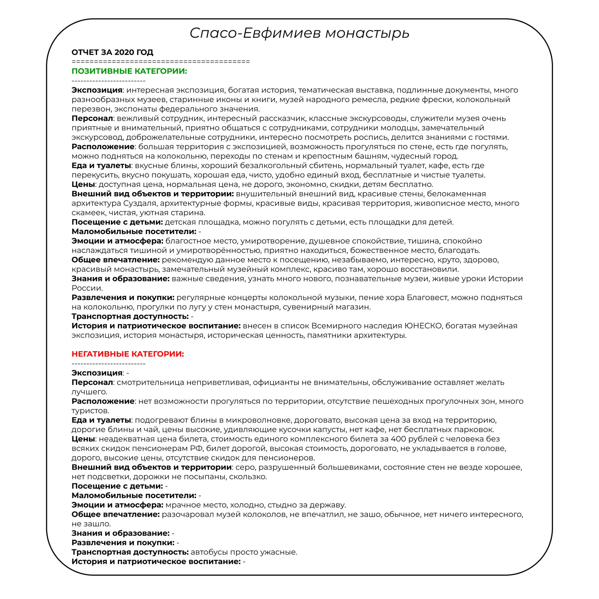
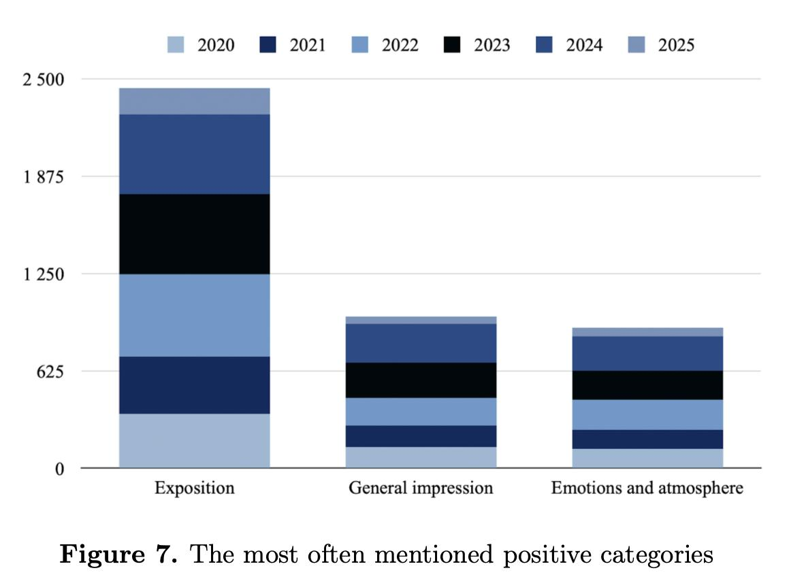
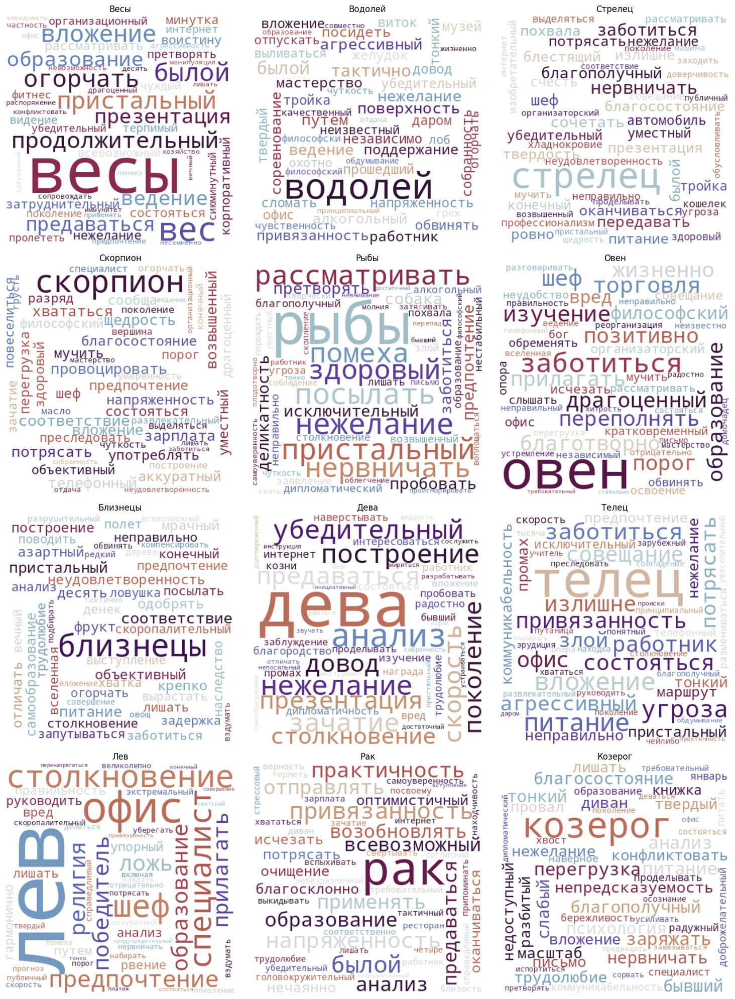

7 Моделирование конвергентных процессов в языке и речи цифровыми методами
7.1 Конвергентные процессы в синтетической и естественной речи
7.1.1 Специфика синтетических текстов и текстов, порожденных естественно в разных жанровых условиях
7.1.1.1 Описание эстетически нагруженных вербальных стимулов (картин) мультимодальными языковыми моделями и информантами
В отчетном периоде продолжалась работа по созданию датасета описаний картин из коллекции Государственного Эрмитажа [1]. На данный момент коллекция включает в себя описания 2000 картин из экспозиционных залов, имеющих наибольшую посещаемость: Французская живопись XIX-XX веков, Итальянская живопись XIII-XVIII веков, Английская живопись XVI-XX веков, Французская живопись XV-XVIII веков, Русская живопись XVIII – начала XX века, Фламандская живопись XVII-XVIII веков, Немецкая живопись XVI-XVIII веков, Немецкая живопись XIX-XX веков, Голландская живопись XV-XVI веков, Испанская живопись XV-XX веков, Бельгийская живопись XIX-XX веков, Живопись различных европейских школ, Иконы. Каждая картина описывалась информантами и Visual Language Model (VLM), разработанной компанией Яндекс и находящейся в закрытом доступе1. VLM представляют собой класс мультимодальных моделей на основе технологии Transformers [2]. VLM натренированы на задачу Image to Text: распознают изображения, а затем дают комплексное вербальное описание, сопоставляя эмбеддинги частей изображения и слов.
Для создания датасета мы провели эксперименты с моделью и с 100 информантами (mean age=21,2; 74 женщины, 26 мужчин, студенты вузов г.Петербурга). Информантам в удаленном асинхронном режиме предлагалась таблица, где в одной колонке располагались картины (от 76 до 100), а во второй колонке предлагалось оставить описание. Информантам предлагалась следующая инструкция: «Опишите содержание картины своими словами. Вы можете начать с таких фраз, как “На картине изображено…”. Предоставьте подробные описания, состоящие из нескольких предложений. Пожалуйста, воздержитесь от поиска дополнительной информации о произведении искусства — опишите только то, что вы видите. Если вы узнаете историческую личность, пожалуйста, укажите её». Участники работали без ограничений по времени, и в среднем на заполнение одной таблицы уходило три недели. В среднем каждый респондент описал 176 картин. Участники предоставляли письменные описания картин, вводя свои тексты в предназначенные для этого ячейки общего файла электронной таблицы, который они затем возвращали кураторам проекта. В итоге полученный набор данных достиг разного уровня охвата: для каждого произведения искусства было получено от 3 (17,5% от общей выборки), 4 (53,9%), 5 (17,4%) или 12 (11,2%) отдельных описаний от разных информантов.
Метаданные для каждой из картин были сохранены в виде JSON-файла, названного по уникальному идентификатору картины в базе проекта.
По сравнению с прошлым годом объем датасета был увеличен на 50%. Полученный датасет позволил провести ряд экспериментов.
Во-первых, было проведено количественное сравнение характеристик текстов описаний картин от ИИ и от информантов. Статистический анализ текстов выявил различия в их количественных характеристиках: описания от моделей характеризовались средней длиной предложения 13,4 слова (стандартное отклонение 2,23), средним числом слов в тексте 65,1 (стандартное отклонение 20,1), с минимумом 18 и максимумом 156 слов; описания от информантов — средней длиной предложения 10,3 слова (стандартное отклонение 13,9), средним числом слов 58,7 (стандартное отклонение 40,3), с минимумом 3 и максимумом 324 слова. Таким образом, описания, сгенерированные моделями, отличаются большей стабильностью объема и длины предложений, а также меньшей вариативностью, что указывает на их более унифицированный и предсказуемый характер по сравнению с человеческими текстами, демонстрирующими значительную индивидуальную разнородность.
Кроме того, мы выдвинули гипотезу о том, что 1) лексическое и семантическое разнообразие описаний информантов зависит от типа описываемого изображения (люди/ натурфакты/абстрактные изображения — например, информанты дают более похожие друг на друга описания изображений природы, но более разнообразные, когда нужно описать людей или абстракции); 2) тип описываемого изображения предопределяет также степень отличности описаний информантов от описаний модели (например, описания абстрактных изображений максимально отличаются у информантов и моделей, а описания монофигурных композиций — минимально).
Для проверки гипотез мы использовали метод векторизации текстовых описаний с помощью модели sentence-transformers/paraphrase-multilingual-MiniLM-L12-v2.
Использовалась подвыборка из 1215 картин. Для каждой картины были получены по три описания от мультимодальных моделей (Qwen2-VL-7B-Instruct, Qwen2.5-VL-7B-Instruct, Gemma-3-27b-it), что в сумме составило 3 645 описаний, и по 3 описания, полученных в рамках анкетирования от 24 информантов (средний возраст – 21 год, среднее количество картин, описанных одним информантом – 176). Итоговое количество исследуемых описаний “от человека” – 4 721.
Картины были дополнительно размечены по шести композиционным категориям: один человек (портрет или фигура в пейзаже), два человека (взаимодействующие или нет), три человека, четыре человека и более (групповая сцена), природа или прочие объекты (пейзаж, натюрморт, архитектура без людей или с мелкими фигурами), абстракция (без узнаваемых объектов или с неидентифицируемыми формами). Количество описанных картин по категориям составило соответственно 423 (1 269 описаний), 337 (1 011), 264 (792), 112 (336), 64 (192) и 16 (48).
Анализ включал векторизацию описаний с помощью модели-трансформера и вычисление косинусной близости в трех парадигмах: между описаниями от информантов, между описаниями от моделей и между парами описаний от информантов и моделей. Результаты показали, что описания от моделей в целом демонстрируют большую семантическую однородность по сравнению с описаниями от информантов независимо от категории. Медианные значения косинусной близости для описаний от информантов варьировались от 0,72 (три человека и абстракция) до 0,79 (один человек), с наибольшим разбросом в категориях с большим числом фигур; для описаний от моделей — от 0,77 (два и три человека) до 0,84 (природа и прочие объекты).
Анализ по категориям выявил закономерности в вербализации визуальной информации VLM-моделями и информантами. Наиболее согласованными оказались описания одиночных фигур и объектов природы: модели достигали медианной близости значений косинусного расстояния между описаниями 0,83 и 0,84 соответственно, информанты — 0,79 и 0,78, а межгрупповая близость составляла 0,78. По мере увеличения числа людей на изображении семантическое разнообразие возрастало: для сцен с четырьмя и более фигурами медианная близость значений косинусного расстояния между описаниями падала до 0,73 у информантов и 0,78 у моделей, с межгрупповой близостью 0,71. Абстрактные композиции демонстрировали наименьшую межгрупповую близость 0,69, что частично объясняется малым объемом выборки, но также указывает на различия в интерпретации неконкретных форм. На рисунок 7.1 представлено сравнение медианных значений косинусной близости описаний по категориям картин для информантов, моделей и межгрупповой выборки.
Исследование выявило заметные различия в том, как люди и визуально-языковые модели семантически обрабатывают изображения: модели дают более согласованные описания, а расхождения с человеческими текстами увеличиваются при усложнении сцены или переходе к абстрактным картинам.
В данный момент ведется исследование вербализации цвета в описаниях от информантов и от моделей. Проводится экспертная разметка описаний, которая в дальнейшем будет проанализирована на предмет различий в выражении семантики цвета. Первичные результаты указывают на то, что информанты описывают цвета в большем объеме, а также более разнообразными способами, чем модели.
РИД: База данных «База данных текстовых описаний и векторных представлений картин из Цифровой коллекции Государственного Эрмитажа»
Регистрационный номер: 2025622931
Вид РИД: база данных.
Авторский коллектив:
- Колмогорова Анастасия Владимировна (заведующий Лабораторией языковой конвергенции);
- Налобина Полина Алексеевна (стажер-исследователь).
Общее описание и состав:
- База данных представляет собой коллекцию структурированных описаний и текстовых представлений произведений искусства из собрания Государственного Эрмитажа.
Состав РИД включает:
- Набор файлов в формате .json, содержащих официальные метаданные картин;
- Набор файлов в формате .txt, содержащих текстовые описания, сгенерированные искусственным интеллектом и респондентами.
7.1.1.2 Оценка качества суммаризации художественных текстов большими языковыми моделями
В отчетном периоде сотрудники лаборатории, продолжая одну из магистральных тем “Цифровые методы в изучении литературы”, начали разработку задачи оценки качества автоматической суммаризации художественных текстов русском языке. В первую очередь оценивается успешность и применимость алгоритмов суммаризации на материале Корпуса русского рассказа, также предпринимается попытка определить лексические и структурные особенности художественного текста, которые могут влиять на результат автоматической суммаризации (лексическое разнообразие, нарушение фабулы, ненадежный рассказчик, смена лица повествования, вставки флешбеков и фрагментов других жанров).
За основу дизайна данного исследования был взят эксперимент ученых Колумбийского университета [3]. Эксперимент включал в себя несколько этапов:
- Формирование сбалансированной выборки из Корпуса русского рассказа;
- Суммаризация избранных документов;
- Автоматическая оценка результатов моделей;
- Экспертная оценка результатов моделей и структурной сложности исходных текстов;
- Сравнение полученных данных и выявление особенностей, повлиявших на результат выдачи.
Выборка аннотированных текстов из Корпуса русского рассказа была сбалансирована по параметру лица повествования. В результате в нее вошли 100 рассказов: 50 рассказов с повествованием от первого лица; 50 рассказов — от третьего лица.
Суммарный объем корпуса, взятого в работу, составил 330 129 словоупотреблений. Средняя длина рассказа — 3 301,29 (sd = 2781,14).
В ходе эксперимента было обработано 100 рассказов и получено 300 саммари — по 100 от каждой модели (GigaChat, T5 и sumy).
Нарратив в произведении — один из инструментов передачи авторской позиции, так как от расположения событий в тексте, уделенного им художественного времени, зависит их важность для рассказываемой истории. События в тексте могут располагаться не только нелинейно, но и сжиматься и растягиваться [4]. Предварительная оценка результатов показала, что алгоритмы автоматической суммаризации не всегда справляются с авторской передачей времени. Кроме того, эмпирический анализ показывает, что автоматическая суммаризация не всегда справляется с обработкой произведений с ненадежным рассказчиком. Модели плохо обрабатывают неожиданные развязки, не включают их в текст пересказа и таким образом создают неправильное впечатление о тексте, упуская ключевые моменты сюжета. Так, в рассказе «В плену» речь идет о двух разведчиках, которым нужно было найти «языка». Солдаты встретили поляка Яна Балицкого, готового сбежать в русскую армию добровольно, но попали в плен, а он успел убежать. Оказалось, что поляк дошел до русской армии и стал служить им переводчиком, однако рассказчик до последнего это скрывает. Ни одна из моделей не включает в пересказ развязку, поэтому создается ошибочное впечатление о том, что один из героев — предатель.
В качестве основных метрик автоматической оценки результатов суммаризации были избраны классические ROUGE [5], BLEU [6] и BERTScore [7].
Автоматическая оценка саммари показала, что наиболее качественные тексты создает GigaChat. Чуть менее успешной оказалась модель t5 и наименее успешно с задачей справилась модель sumy, что особенно видно по метрикам, подсчитывающим совпадающие n-граммы. Нейросетевые же метрики показали, что все модели справились с задачей сравнительно хорошо, однако абстрактивные модели – чуть лучше.
Стоит отметить, что все модели показали сравнительно низкие оценки ROUGE и BLEU, в то время как показатели BERTScore в целом высокие. Это говорит о том, что статистические подходы не совсем подходят для задачи суммаризации из-за отсутствия перефразирования, а большие языковые модели, напротив, подбирают синонимичные конструкции слишком вольно.
| Модель | ROUGE-1 | ROUGE-2 | ROUGE-L | BLEU | BERT-Precision | BERT-Recall | BERT-F1 |
|---|---|---|---|---|---|---|---|
| GigaChat | 0,3405 | 0,0693 | 0,2028 | 0,0178 | 0,6709 | 0,6864 | 0,6782 |
| Т5 | 0,3225 | 0,0612 | 0,1930 | 0,0145 | 0,6754 | 0,6771 | 0,6757 |
| sumy | 0,2442 | 0,0348 | 0,1432 | 0,0063 | 0,6247 | 0,6573 | 0,6400 |
В общей сложности 300 кратких содержаний от трех разных моделей прошли экспертную оценку по следующим критериям:
- Охват (coverage) — упоминание важных сюжетных точек, метрика оценивает смысловую составляющую;
- Достоверность (faithfulness) — наличие несуществующих в исходном тексте деталей или искажение истории;
- Связность (coherence) текста;
- Анализ — наличие верной интерпретации авторской позиции или тем рассказа.
По каждому из четырех пунктов эксперт выставляет оценку по шкале Лайкерта, где 1 — худший результат, а 4 — лучший. Также экспертам было предложено самостоятельно выбрать фрагменты суммаризации, где допущена ошибка и отнести ее к одному из четырех критериев, приведенных выше.
Из таблица 7.2 видно, что саммари, созданные человеком, несколько уступают большой языковой модели GigaChat в уодобочитаемости текста и его аналитичности, однако имеют преимущество в передаче основных моментов сюжета и высокой достоверности. Краткие содержания модели GigaChat показывают самые высокие результаты в сравнении с другими моделями, но несколько уступают эталонным суммаризациям в охвате и достоверности, что не позволяет рассматривать этот инструмент как то, что может заменить пересказ человека, однако их преимущество заключается в высокой связности генерируемого текста и включения анализа в пересказ. Тексты модели T5, несмотря на внешнюю схожесть с пересказами эталона, о чем говорят высокие показатели автоматической оценки, значительно уступают другим моделям, совершая фактические ошибки в 74 рассказах из 100. Краткие содержания экстрактивной модели sumy отличаются сравнительно высокой достоверностью, однако обладают наименьшей связностью, аналитичностью и плохо передают основные события из текста оригинала, включая в повествование незначительные детали и упуская важные моменты для понимания.
| Модель | Охват | Достоверность | Связность | Анализ | Итог | |||||
|---|---|---|---|---|---|---|---|---|---|---|
| mean | sd | mean | sd | mean | sd | mean | sd | mean | sd | |
| GigaChat | 3,35 | 0,66 | 3,05 | 1,01 | 3,91 | 0,35 | 2,49 | 1,14 | 12,71 | 2,40 |
| T5 | 1,94 | 0,93 | 1,48 | 0,85 | 2,71 | 1,11 | 1,32 | 0,53 | 7,45 | 2,48 |
| Sumy | 1,62 | 0,72 | 3,39 | 0,92 | 1,68 | 0,68 | 1,09 | 0,41 | 7,7 | 2,06 |
| Human | 3,55 | 0,69 | 3,69 | 0,76 | 3,73 | 0,49 | 1,75 | 1,03 | 12,72 | 1,99 |
Чтобы выделить особенности художественного текста, влияющие на результат суммаризации, были рассмотрены такие показатели как коэффициент лексического многообразия, нарушение фабулы, наличие ненадежного рассказчика в тексте, смена лица повествователя (грамматическая и смысловая), включение флэшбеков и повествования о снах, а также вставка фрагментов других жанров — песен, стихотворений, анекдотов и др. Корреляционный анализ проводился путем подсчета коэффициента корреляции Пирсона.
Оценка структурной сложности рассказа складывается из пяти критериев и составляет от 0 до 5 баллов. Эксперты оценивали текст с опорой на 5 критериев. По каждому из критериев текст мог получить оценку 1 или 0. Так, в общей сложности нарративная структура произведения оценивалась максимум в 5 баллов и минимум в 0, где 5 — наиболее усложненное повествование, 0 — наиболее простое. В таблица 7.3 представлены результаты экспертной разметки структры рассказов на нарративную сложность.
| Критерии | К1. Фабула | К2. Рассказчик | К3. Лицо | К4. Флешбеки | К5. Вставки других жанров |
|---|---|---|---|---|---|
| Кол-во рассказов | 51 | 38 | 16 | 53 | 18 |
Корреляционный анализ позволяет сделать следующие выводы:
- TTR: повышение коэффициента TTR скорее положительно влияет на лексическую схожесть текстов модели и эталона в случае генеративных моделей (T5, GigaChat), однако несколько отрицательно — в случае экстрактивной модели (sumy). На передачу основной информации текста коэффициент TTR влияет положительно для модели T5, несколько улучшает качество текстов экстрактивной суммаризации и практически не имеет связи с результатом большой языковой модели GigaChat;
- Лицо повествования (грамматический показатель): параметр практически не влияет на результат суммаризации, однако гипотеза о том, что перволичное повествование будет несколько затруднять пересказ модели частично подтвердилась, но только относительно лексической схожести сгенерированного и эталонного текстов. На содержательные качества саммари, такие как фактическая точность, полнота передачи сюжета, связность и наличие анализа перволичное повествование не влияет в случае модели GigaChat и слабо положительно влияет относительно моделей T5 и sumy;
- Нарушение фабулы: нелинейное повествование слабо негативно влияет на качество суммаризации GigaChat, T5, особенно на фактическую точность текстов, но влияет слабо положительно на достоверность и логическую связность экстрактивной модели sumy. Этот параметр не влияет на лексическую схожесть текстов саммари и эталона;
- Ненадежный рассказчик: этот параметр коррелирует с перволичным повествованием, так как одним из критериев определения ненадежного рассказчика является первое лицо повествования. В целом ненадежный рассказчик практически не влияет на результат модели GigaChat, однако несколько негативно влияет на лексическую схожесть саммари и эталона и связность предложений (r = -0,16; r = -0,16). Этот параметр, как и первое лицо, негативно влияет на лексическую схожесть саммари T5 (r = -0,14), в особенности sumy и эталона (r = -0,19), однако скорее положительно влияет на полноту передачи основной информации, связность текста и анализ в текстах этих моделей;
- Смена лица рассказчика или повествования: этот параметр практически не влияет на результат работы моделей, однако имеет слабую отрицательную связь с автоматическими и экспертными оценками генеративных моделей GigaChat и T5;
- Флешбеки: повествования о прошлом практически не влияют на результаты абстрактивных моделей GigaChat и T5, однако если и влияют, то скорее слабо негативно. В то время как для экстрактивной суммаризации вставки флешбеков, напротив, являются положительным параметром, хорошо влияющим на фактическую точность текста;
- Вставки других жанров: наличие в тексте фрагментов других жанров практически не влияет на результат работы большой языковой модели, однако слабо негативно влияет на лексическую схожесть текстов T5, sumy с текстами эталона и слабо положительно — на полноту передачи основных событий текста и связность краткого содержания модели sumy.
Таким образом, получены данные о том, что существующие алгоритмы автоматической суммаризации не всегда справляются с задачей краткого пересказа художественного текста. Расхождения во влиянии разных параметров на результат суммаризации указывают на то, что они влияют на результат не так сильно, как обучающая выборка каждой конкретной модели. В перспективе исследования разработка нового инструмента суммаризации путем тонкой настройки моделей с использованием улучшенных версий эталонных кратких содержаний в качестве обучающей выборки.
7.2 Проблемные зоны и технологические решения в автоматической обработке стандартных и нестандартных речевых данных
7.2.1 Диаризация: оценка качества на материалах корпуса, обработка новых данных спонтанной устной речи КУРС
В 2025 сотрудники лаборатории продолжили эксперименты по оценке возможностей и качества инструментов автоматической диаризации, т.е. процесса выделения говорящих в потоке речи. В дальнейшем модель и соответствующие утилиты становились частью общего цикла обработки звуковых данных корпуса. Анализ включал в себя сравнение распознанного текста, автоматически определенных временных меток и дикторов с данными транскрипций корпуса КУРС (Корпус устной речи студентов), полученными вручную экспертами. В эталонную выборку вошли 195 эпизодов, аудиозаписей с повседневной речью, собранных по методике «речевого дня». Записи сформированы как наборы аудиофайлов, охватывающие весь день информанта — от пробуждения до сна — либо отдельные разговоры.
Экспертная разметка эталонной выборки представляла собой таблицу, где каждой реплике соответствуют уникальный идентификатор говорящего, краткое описание эпизода, название аудиофайла, время начала и продолжительность речи. Текст реплик содержал маркеры синтагматического и фразового членения, а также обозначения пауз и паралингвистических явлений [8]. Накладывающаяся речь записана в одну реплику, список одновременно говорящих разделен символом “@” или “#”. Тестовые автоматические данные в свою очередь включали в себя обозначение найденного говорящего, временную метку начала и окончания речи. Обозначение дикторов, формат таймкодов и пересечения реплик в речи отличают экспертную разметку от тестовой: в таблице от диаризатора идентификаторы говорящих повторяются для каждого из аудиофайлов, предлагаются временные метки начала и окончания фрагмента, одновременная речь разнесена по разным репликам с пересечением таймкодов.
Для тестирования качества форматы разметки были приведены к единому виду, чтобы устранить различия, не влияющие на смысловую нагрузку, но способные исказить метрики при сравнении гипотезы и референса. Так, была полностью удалена пунктуация, приведён регистр всех слов к нижнему, заменены «ё» на «е», числительные, как арабские, так и прописью, были заменены на маркер «числ». При этом при конвертации меток спикеров существовал риск ошибок, в результате которых диагностические параметры могли быть рассчитаны неверно. Сами пересечения реплик в экспертной разметке не подлежат преобразованию, т.к. извлечь таймкоды для отдельных говорящих в этом случае невозможно. Помимо прочего, встречаются редкие орфографические ошибки в эталонной разметке. Риски минимизировались дополнительными тестами для алгоритмов и ручной проверкой выровненных пар слов из экспертной и тестовой разметок.
Процесс обработки аудиоданных для тестирования состоял из четырех этапов: нормализации, диаризации и разделения аудио на фрагменты, распознавания и подсчета метрик. Вначале аудиофайлы были приведены к единому формату и необходимой для ASR частоте дискретизации, 16 кГц, была выровнена громкость. Далее проводилась диаризация аудио определение и сегментация фрагментов по говорящим. Полученные сегменты сохранялись в отдельные файлы и передавались модели распознавания. В конце по полученным расшифровкам подсчитывались диагностические параметры качества диаризации и распознавания.
В качестве метрик использовались стандартные параметры качества диаризации и распознанного текста [9]: DER (Diarization Error Rate), DWER (Diarization Word Error Rate), SAWER (Speech Attributed Word Error Rate) и собственно WER (Word Error Rate). Все четыре основываются на подсчете количества замен, пропусков и добавлений слов, DWER дополнительно указывает, какой процент слов от общего количества слов был определен неверно, т.е. отнесен не к тому спикеру. SAWER — количество неправильно распознанных слов в речи каждого из говорящих.
Для распознавания речи взята модель ASR Whisper Large v3 (ранее замеры качества и сравнение с НТР проводилось в [10]), для диаризации выбрана pyannote [11]: фреймворк с открытым исходным кодом и модель, демонстрирующая DER 34,4 и 24 на данных датасетов DIHARD и ETAPE.
Результат: Результаты расчётов метрики DER по референсной и тестовой выборке показывают значительное варьирование качества диаризации. Минимальное значение DER составило 10,3, в то время как максимальные значения стремятся к 100. При этом для 10% аудиозаписей ошибка диаризации не превышает 27,9. Среднее значение DER по всей выборке оказалось также достаточно высоким — 68,3, при этом медиана составила 52,6. Наилучшие результаты и относительная стабильность алгоритма достигаются в аудиозаписях с простыми условиями: нет лишних шумов, количество говорящих не превышает одного-двух, речь громка и отчетлива.
Средние значения параметров WER, DWER и SAWER находятся в диапазоне 46,1 до 64, медиана — от 46,2 до 62,9. Менее чем у 10% аудиозаписей WER составляет 27,4, DWER — 24,0, SAWER — 30,6. 90-й процентиль достигает для WER 62,6, DWER — 81,1, SAWER — 96,8. Максимальные значения достигают 100. Несмотря на то что минимальные значения (от 8,4 до 13,3) говорят о наличии немногих высококачественных распознаваний, в целом система, как и при диаризации, демонстрирует заметное варьирование качества.
К настоящему моменту с помощью моделей диаризации и ASR обработано 869 макроэпизодов КУРС.
7.2.2 Автоматическое распознавание атипичной речи на русском языке (на материале речи пациентов с афазией) : разработка бенчмарка
Одной из задач проекта стало сравнение инклюзивности и оценка качества распознавания атипичной (афазической) речи у моделей автоматического распознавания речи (АРР), которые доступны на российском рынке.
В качества материала исследования выступил датасет RuAphasiaBank, собранный в отчетном году сотрудниками лаборатории. Датасет RuAphasiaBank представляет собой корпус речевых записей, собранный для исследования афазической речи. Записи были получены в Центре нейрореабилитации ФСНКЦ ФМБА России (г. Красноярск). Все пациенты (или их доверенные лица), включенные в исследование, подписывали информированное согласие на анонимизированную запись голоса. Для проведения исследования было получено официальное разрешение этического комитета НИУ ВШЭ. Запись осуществлялась во время занятий с логопедом в стационаре. Расстояние между пациентом и логопедом составляло около 50 см, а между пациентом и звукозаписывающим устройством не более 25 см. Использовались стандартные диктофоны, встроенные в телефоны марки iPhone. Для соблюдения принципов конфиденциальности во время записи устройства были в офлайн-режиме. После записи передавались исследовательской группе на физических носителях, где проходили процедуру анонимизации: каждая запись прослушивалась, и любая информация личного характера (ФИО, дата и место рождения, место проживания) исключалась из записи с помощью специальных инструментов обработки звука. Каждой записи присваивался уникальный идентификационный номер, который представляет собой сокращенное описание метаданных записи (номер фонограммы в рамках датасета, номер спикера в рамках датасета, пол, возраст, диагноз, степень тяжести).
Как можно заметить в таблица 7.4 датасет включает 188 аудиозаписей, из которых 164 относятся к атипичной речи, а 24 – к речи нейротипичных информантов. Всего в выборке представлено 70 пациентов с различными формами афазии и 20 нейротипичных спикеров. Временной объем датасета составляет 9,6 часов звучания, при этом средняя продолжительность речевого материала, приходящаяся на одного пациента, составляет около 0,14 часа.
| Тип распределения/ Признак | По пациентам | По типу афазии | По степени нарушения | По типу речи | По типу текста | По нейротипичным информантам |
|---|---|---|---|---|---|---|
| Общее количество | Пациентов/ записей : 70 / 164 | Пациентов/ записей : КМА – 58/140 ЭфА – 2/6 Сем – 2/3 Сенс – 5/10 АМ – 1/1 Т – 2/4 |
Пациентов/ записей: Легкая – 5/12 Средняя – 30/91 Тяжелая – 35/61 |
Записей: Монолог – 19 Чтение – 27 Пересказ – 18 Слоги – 13 |
Записей : Дидакт – 17 Худож – 29 Упрощ – 21 |
Информантов/ записей : 20/24 |
| Гендер (М и Ж) | Пациентов/ записей (кол-во): 54/129 (М) 16/35 (Ж) |
Пациентов M/Ж (кол-во): КМА – 44/14 ЭфА – 2/0 Сем – 2/0 Сенс - 3/2 АМ – 1/0 Т – 2/0 |
Пациентов M/Ж (кол-во): Легкая – 3/2 Средняя – 25/5 Тяжелая – 27/8 |
Записей (кол-во) M/Ж : Диалог – 39/12 Монолог – 12/3 Чтение – 10/4 Пересказ – 8/3 Слоги – 11/0 |
Записей (кол-во) M/Ж: Дидакт – 14/3 Худож – 21/8 Упрощ – 9/12 |
M/Ж (кол-во): 16/4 |
| Средний возраст пациентов/ информантов | 53,4 М 61,3 Ж | КМА – 52,4 ЭфА – 49,5 Сем – 63 Сенс – 65,4 АМ – 62 Т – 48 |
Легкая – неизв. Средняя – 51,4 Тяжелая – 57,7 |
Диалог – 56,5 Монолог – 50,8 Чтение – 46,2 Пересказ – 45,2 Слоги – 53,7 |
Дидакт – 45,8 Худож – 44,4 Упрощ – неизв. |
58,5 |
| Терапевт | 8 | - | - | - | - | - |
| Время звучания (в час) | Общее – 9,6 час Среднее на 1 пациента 0,14 час |
КМА – 8,3 час ЭфА – 0,31 час Сем – 0,15 час Сенс – 0,77 час АМ – 0,09 час Т – 0,20 час |
Легкая – 0,55 час Средняя – 5,4 час Тяжелая – 3,9 час |
Диалог – 5,6 час Монолог – 1 час Чтение – 1,5 час Пересказ – 0,85 час Чтение слогов – 0,62 час |
Дидакт – 0,86 час Худож – 1,6 час Упрощ – 1,3 час |
4,3 час |
Примечание – Условные сокращения: КМА — комплексная моторная афазия, ЭфА — эфферентная афазия, Сем — семантическая афазия, сенс — сенсорная афазия, АМ — акустико-мнестическая афазия, Т — тотальная афазия (типология афазий дана по [12–14]; Дидакт — дидактические тексты, Худож — художественные тексты, Упрощ — упрощенные из датасета RuSimplAphasia.
В рамках данного исследования собранные данные использовались для проведения тестирования систем автоматического распознавания речи (АРР). Актуальность данного вопроса объясняется тем, что люди, страдающие афазией, остаются участниками речевой коммуникации с банками, медицинскими учреждениями, розничной торговлей и другими институциями, в повседневную жизнь которых уже вошли речевые технологии. Собранный датасет позволил оценить качество распознавания и инклюзивность движков АРР на русском языке, доступных как коммерческие сервисы от ведущих российских разработчиков. На собранных данных тестировались общедоступные демо-версии облачных сервисов АРР: Сервисы, оцененные в данном исследовании, включают: Yandex SpeechKit [15], SaluteSpeech [16] (приложение для компьютера), Shopot [17], T-bank [18]. Эти движки уже вошли в состав голосовых помощников, платформ для анализа речи и клиентского опыта и стали универсальными решениями преобразования звучащей речи в текст.
Для оценки качества работы систем АРР на собранных данных рассчитывалась WER (пословная ошибка распознавания) и CER (посимвольная ошибка распознавания). Для расчета метрик были вручную размечены эталонные тексты: 44 аудиозаписи пациентов 28-76 лет (31 мужчина и 8 женщин) с легкой и умеренной, преимущественно, комплексно-моторной афазией. Для разметки были отобраны три типа речи: монолог (11 записей), чтение вслух (17 записей) и пересказ (16 записей). В качестве контрольного подмножества данных вручную затранскрибировали 15 записей монологической речи 13 нейротипичных респондентов в возрасте 55-65 лет. Подробные расчеты WER и CER для каждой модели представлены в таблица 7.5.
В ходе экспериментов была выявлена неоднородность качества работы систем автоматического распознавания речи (АРР) на контрольном подмножестве и на различных типах речи. Наибольшая точность при распознавании монологической речи была зафиксирована у сервиса Yandex SpeechKit (медиана WER = 0,16 – 0,55). В то же время, система SaluteSpeech показала на данном типе речи наименьшие результаты (медиана WER = 0,34 – 0,72). Следует отметить, что для сервисов Yandex SpeechKit и SaluteSpeech была характерна тенденция к двукратному повышению точности распознавания монологов респондентов с афазией по сравнению с речью нейротипичных респондентов. Системы Shopot и T-Bank продемонстрировали эквивалентное качество АРР для монологов пациентов и контрольной группы. При этом сервис T-Bank показал ухудшение метрик для речи пациентов с афазией по сравнению с нейротипичной речью, что указывает на его пониженную устойчивость к речевым нарушениям, характерным для данного нарушения.
Модель АРР Yandex SpeechKit демонстрирует наиболее стабильное качество распознавания на монологах и записях контрольной группы, что подтверждается относительно низкими и плотно кластеризованными значениями WER и CER. Вместе с тем, на фонограммах с чтением и пересказом пациентов с афазией наблюдается значительный рост количества ошибок распознавания и их высокая вариабельность. Наибольшие затруднения у модели вызывает задача на чтение: максимальные значения WER превышают 100%, а показатель CER характеризуется широким разбросом.
Модель АРР SaluteSpeech демонстрирует более высокую точность обработки монологической речи лиц с афазией по сравнению с нейротипичными респондентами. При выполнении задания на чтение модель показала значения WER, сопоставимые с контрольной группой, однако распределение ошибок в контрольной группе было значительно более плотным. Наибольшие трудности у системы вызвало подмножество пересказа, где медиана WER достигла 72%. Следует отметить, что значительно более низкий уровень посимвольной ошибки (CER) в речи лиц с афазией по сравнению с контрольной группой указывает на снижение качества работы модели при обработке спонтанной, быстрой и лексически разнообразной нейротипичной речи. Выраженное расхождение между WER и CER в записях пациентов с афазией свидетельствует о среднем качестве распознавания на фонемном уровне (низкий CER), но о нарушенном лексико-семантическом сопоставлении (высокий WER). В противоположность этому, сбалансированное соотношение WER ≈ CER в контрольных записях, вероятно, отражает влияние нелингвистических факторов и сложности, связанные с распознаванием относительно быстрой спонтанной речи.
Модель АРР Shopot демонстрирует относительно низкий уровень ошибок при распознавании монологов (медиана WER = 29%). При этом монологи пациентов с афазией (WER = 29 – 59%) распознаются с сопоставимой или более высокой точностью по сравнению с речью контрольной группы (WER = 31 – 88%), что может свидетельствовать о специфической адаптации модели к медленной речи. Результаты контрольной группы характеризуются большей стабильностью (WER: 31–41% до 90-го процентиля). Вместе с тем, модель Shopot показывает более низкое качество при распознавании пересказа (медиана WER = 36%) и чтения (медиана WER = 38%). Наибольшие трудности система испытывает в заданиях на пересказ, где точность распознавания ниже, чем в заданиях на чтение, что указывает на проблемы при обработке несвязной речи пациентов. Стабильно более низкие значения CER по сравнению с WER на всех наборах данных позволяют сделать вывод о том, что модель обеспечивает точное распознавание на фонемном уровне, однако испытывает значительные трудности на уровне лексико-семантической интерпретации.
Модель АРР T-Bank демонстрирует оптимальные результаты при обработке монологов (WER = 30–52%) и речи в контрольной группе (WER = 28–38%). Несмотря на сопоставимую базовую точность для обеих подгрупп, записи пациентов характеризуются значительно большим разбросом ошибок (до 52% против 38%). Следует отметить, что контрольная группа сохраняет исключительную стабильность как по показателям WER (28–38%), так и CER (15–23%). Наихудшие результаты система T-Bank показывает при распознавании чтения (WER = 52–105%) и пересказа (WER = 43–98%). Наиболее проблемным сценарием является чтение: значение WER достигает 105% на 99-м процентиле, что свидетельствует о неприспособленности модели к обработке речевых данных подобной сложности. При этом показатель CER остается относительно низким (25–59%). Полученные данные позволяют предположить, что основная проблема модели заключается в распознавании целых слов, а не в интерпретации на уровне фонем. Точность распознавания пересказа (медиана WER = 43%) является средней, превосходя результаты по чтению, но уступая показателям для монологов. В качестве итога представлены лучшие результаты по типам речи: в таблица 7.5 наименьшие проценты ошибок для каждой категории выделены жирным шрифтом.
| Движок АРР | Монолог (50/99%) | Чтение (50/99%) | Пересказ (50/99%) | Контрольная группа, монологи (50/99%) |
|---|---|---|---|---|
| Yandex SpeechKit | WER: 0.16/0.49 CER: 0.1/0.31 |
WER: 0.55/1.11 CER: 0.28/0.81 |
WER: 0.49/0.98 CER: 0.24/0.55 |
WER: 0.42/0.48 CER: 0.26/0.3 |
| SaluteSpeech | WER: 0.34/0.59 CER: 0.19/0.41 |
WER: 0.60/1.00 CER: 0.23/0.51 |
WER: 0.72/1.00 CER: 0.20/0.47 |
WER: 0.64/0.71 CER: 0.26/0.69 |
| Shopot | WER: 0.29/0.59 CER: 0.19/0.53 |
WER: 0.38/0.80 CER: 0.2/0.81 |
WER: 0.36/0.88 CER: 0.22/0.58 |
WER: 0.31/0.88 CER: 0.18/0.74 |
| T-bank | WER: 0.30/0.52 CER: 0.15/0.31 |
WER: 0.52/1.05 CER: 0.25/0.59 |
WER: 0.43/0.98 CER: 0.26/0.74 |
WER: 0.28/0.38 CER: 0.15/0.23 |
Анализ метрик, представленных в таблица 7.5, позволяет выявить характерные особенности каждого движка АРР. Yandex SpeechKit демонстрирует наибольшую точность при обработке монологов пациентов с афазией. Модель Shopot показывает самый низкий уровень ошибок по метрике WER в наиболее сложных для распознавания сценариях — чтении и пересказе. В то же время SaluteSpeech лидирует в этих же сценариях по метрике CER, причем для записей пациентов с афазией у данной модели наблюдается выраженное расхождение между значениями WER и CER. T-Bank превосходит остальные системы в распознавании спонтанной разговорной речи нейротипичных информантов, а также в целом демонстрирует стабильное качество при обработке различных типов речи.
Все рассмотренные системы АРР демонстрируют значительное снижение качества распознавания в заданиях на чтение и пересказ, что подтверждается ростом показателя WER при стабильно низких значениях CER. Данная картина указывает на системные проблемы, связанные скорее с лексической интерпретацией, чем с ограничениями акустического распознавания. При обработке спонтанной речи проявляется общая закономерность: качество распознавания речи контрольной группы не всегда превышает результаты для атипичной речи пациентов с афазией. В частности, все системы АРР, за исключением T-Bank, показывают более высокий процент ошибок при распознавании речи в контрольной выборке, состоящей из записей монологов нейротипичных информантов, выполненных в идентичных технических условиях. Наблюдаемый тренд позволяет выдвинуть предположение о том, что современные системы АРР на российском рынке могут быть непреднамеренно переобучены на гиперартикулированной речи, что затрудняет корректную обработку естественной разговорной речи даже в отсутствие речевых патологий.
Собранный и размеченный датасет RuAphasiaBank является уникальным ресурсом, необходимым для мониторинга качества систем АРР для русского языка, поскольку в известном датасете AphasiaBank [19] русский язык не представлен, а сущесвующие датасеты для русского языка меньше по объему и более специфичны по выборке [20]. Его использование позволило оценить системы АРР при распознавании разных видов атипичной речи, а также естественной разговорной монологической речи пользователей возрастного диапазона 55 – 66 лет. В результате проведенного тестирования мы получили два, на наш взгляд, интересных наблюдения.
Во-первых, в записях пациентов с афазией такие виды речи, как пересказ и чтение, несмотря на свой репродуктивный, а не продуктивный характер, оказались более трудными для АРР, чем монолог. Это связано с тем, что большинство использованных записей чтения и пересказов принадлежит пациентам с комплексной моторной афазией, которые испытывают трудности с планированием высказывания на основе нового содержания, и с артикуляцией, у них затруднен выбор артикулем, переход от одной моторной программы к другой. В монологе те же пациенты часто прибегают к использованию автоматизированных речевых рядов (первое, второе, третье и компот), устойчивых речений (дела как сажа бела), клише (меня зовут) произнесение которых для пациента облегчено речевой привычкой.
Во-вторых, неожиданным оказалось то, что три из четырех протестированных систем показывают на атипичных монологах даже лучшие результаты, чем на типичной разговорной монологической речи информантов старше 50 лет. Данный факт связан, по-видимому, с тем, что в разговорной речи в естественных условиях у информантов наблюдается стремление к экономии речевых усилий, приводящее к разнообразным фонетическим редукциям и усечениям форм, и эта тенденция с возрастом усиливается. Модели же обучены, в основном, на речи дикторов, актеров, имеющих профессиональную привычку к четкой, даже утрированной, артикуляции. У пациентов с афазией как раз наблюдается стремление к утрированной артикуляции, хотя при этом, довольно часто, снижена сила голоса.
Следует отметить, что некоторые из рассмотренных систем дают для отдельных видов речи относительно высокие метрики качества, но при изменении типа речи их показатели резко ухудшаются. Иными словами, говорить об инклюзивности моделей, попавших в тестовую выборку, пока сложно даже применительно к речи нейротипичных пользователей.
В перспективе созданный датасет RuAphasiaBank позволит осуществлять регулярный мониторинг инструментов АРР, используемых в России коммерческими и государственными организациями, формируя репрезентативные бенчмарки для оценки качества распознавания афазической речи.
РИД: База данных «RuAphasiaBank, база данных фонограмм речи пациентов с афазией». Свидетельство о государственной регистрации базы данных: № 2025623465.
Вид РИД: база данных. Авторский коллектив:
- Колмогорова Анастасия Владимировна (заведующий Лабораторией языковой конвергенции);
- Явшиц Екатерина Валерьевна (младший научный сотрудник);
- Сугян Анна Хачатуровна (стажер-исследователь);
- Сергеева Мария Олеговна (стажер-исследователь).
База данных представляет собой структурированную коллекцию аудиозаписей речи и сопутствующих метаданных. Состав РИД включает:
- Набор аудиофайлов в формате .wav с записями речи;
- Текстовый файл в формате .csv, содержащий подробные метаданные для каждого аудиофайла.
7.2.3 Объектный сентимент-анализ отзывов на культурные институции с помощью больших языковых моделей (на материале датасета отзывов посетителей Владимиро-суздальского музея-заповедника)
В рамках проекта решалась задача проверки эффективности больших языковых моделей (LLM) как инструмента для аспектно-ориентированного анализа тональности (ABSA) в условиях отсутствия предопределенного набора целевых аспектов и присущей данным политематичности.
Впервые в качестве данных для сентимент-анализа выступили тексты отзывов на культурные институции. Традиционным объектом применения методов сентимент-анализа являются отзывы на товары и услуги, однако постепенно формируется относительно новый тип отзывов – отзывы посетителей учреждений науки и культуры. У подобных текстов существует своя специфика, в значительной мере отличающая их от других оценочных субжанров. В частности, подобные тексты совмещают в себе черты не только оценочных жанров, но и рефлексивов, нарративов о жизни и т.д.
Исследование было подчинено задачам, поставленным заказчиком – Владимиро-Суздальским музейным комплексом. Необходимо было собрать датасет отзывов с существующих цифровых платформ и автоматически выявить, что нравится, а что не нравится посетителям музейного комплекса. При этом требовалось сфокусироваться на динамике, т.е. сохранить тренды по годам (с 2020 по 2025).
В качестве материала исследования использовались 12,187 отзывов из 9 публично доступных онлайн-ресурсов на 15 объектов Владимиро-Суздальского музея-заповедника в период 2020-2025 гг. Отзывы были получены путем веб-скрейпинга (автоматического сбора текстовых данных из интернета). Характеристики корпуса отзывов указаны в таблица 7.6.
| Музейным объектам | N | По платформам-источникам | N | По годам | N |
|---|---|---|---|---|---|
| Суздальский Кремль | 2527 | Yandex Maps | 6305 | 2020 | 2400 |
| Спасо-Евфимиев монастырь | 2218 | Google Maps | 5090 | 2021 | 1643 |
| Музей деревянного зодчества | 1888 | Tripadvisor | 523 | 2022 | 2373 |
| Музей хрусталя | 781 | Otzovik | 93 | 2023 | 2013 |
| Успенский собор | 690 | 2gis | 85 | 2024 | 3467 |
| Музей Мальцовых | 673 | Fooby | 40 | 2025 | 291 |
| Исторический музей | 663 | Autotravel | 25 | ||
| Димитриевский собор | 620 | Irecommend | 23 | ||
| Палаты | 505 | Tonkosti | 3 | ||
| Церковь Бориса и Глеба | 583 | ||||
| Золотые ворота | 403 | ||||
| Музей природы | 344 | ||||
| Дом-музей Столетовых | 271 | ||||
| Музей «Старый Владимир» | 40 | ||||
| Музей-усадьба В. Храповицкого | 21 |
Для выполнения задачи использовались следующие методы:
- Веб-скрейпинг
- Автоматическая предобработка данных (формирование таблиц, очистка от пустых отзывов, сортировка по годам)
- Аспектно-ориентированный сентимент-анализ
- Применение больших языковых моделей (запуск моделей через llama-cpp-python локально)
- Стратегический промпт-инжиниринг
Разработан пайплайн обработки отзывов для автоматического формирования отчетов по позитивным и негативным категориям объекта по годам. Пайплайн представлен в рисунок 7.2. Модель вызывается 2 раза: сначала ей дается промт с инструкцией извлечь негативные и позитивные ключевые слова из отзывов по каждому объекту и по каждому году; затем модель получает инструкцию разделить все полученные на первом этапе ключевые слова на предзаданные обязательные и факультативные категории. Среди обязательных категорий: экспозиция, персонал, месторасположение, еда и туалеты, цены, внешний вид объектов и территории; среди факультативных: посещение с детьми, условия для людей с ограниченными физическими возможностями, эмоции и атмосфера, общее впечатление, знания и образование, развлечения и шоппинг, доступность (как добраться до места), история и патриотическое воспитание. Под ключевым словом в данной работе подразумевался минимальный фрагмент текста, имеющий предикацию – это могло быть адъективно субстантивное сочетание (увлекательная экскурсия), а могло быть простое предложение с глагольной группой (учитель прошел бесплатно).

В качестве используемой большой языковой модели была выбрана модель YandexGPT5-Lite-8B-instruct-Q8_02, показавшая наилучший результат для выбранной задачи. Характеристики модели представлены в таблица 7.7.
| Параметр | Значение |
|---|---|
| Количество параметров | 8 миллиардов |
| Базовая архитектура | Llama |
| Квантизация | Q8_0 (8 bit) in GGUF format |
| Размер модели | 8.54 GB |
| Максимальный размер контекста | 32K |
| Совместимость | Совместима с llama.cpp |
В результате обработки были сформированы 15 таблиц с позитивными и негативными ключевыми словами по каждому объекту, а также 15 текстовых отчетов, где ключевые слова были распределены по позитивным и негативным категориям с помощью большой языковой модели. Отчеты были проверены экспертно, количество галлюцинаций модели (неправильное отнесение к категориям, логические, синтаксические ошибки, несуществующие ключевые слова) составили не более 7% от общего числа ключевых слов. Пример итогового результата можно увидеть в рисунок 7.3.

Категориями с самым большим числом позитивных ключевых слов стали Экспозиция, Общее впечатление, Эмоции и атмосфера (рисунок 7.4). Категориями с самым большим числом негативных ключевых слов: Экспозиция, Цены, Общее впечатление (рисунок 7.5).


Результат: разработан и апробирован эффективный пайплайн для аспектного сентимент-анализа отзывов на культурные институции с помощью больших языковых моделей. Заказчику предоставлены данные в динамике по 15 объектам за требуемый период времени. На основании полученных данных ведется работа по описанию коллективного портрета современного посетителя музея.Разработанный метод может быть экстраполирован на другие культурные институции.
Данный результат достигнут в рамках соглашения о научном сотрудничестве между НИУ ВШЭ Санкт-Петербург и Федеральным государственным бюджетным учреждением культуры «Государственный Владимиро-Суздальский историко-архитектурный и художественный музей-заповедник» (подписан 20 января 2025 г.).
7.2.4 Конвергентные речевые практики русскоязычного сегмента Интернет (на материале корпусных данных)
Задача данной части проекта – исследование цифровыми методами распространенных речевых и дискурсивных практик, используемых носителями русского языка в социальных сетях русскоязычного сегмента сети Интернет. В фокусе работы в отчетном году - дискурсивные практики зообъявлений и гороскопов.
Согласно Дж. Берджеру, первой древний союз человека и животного пошатнула декартовская идея l’animal-machine, а окончательно он был разрушен в эпоху позднего капитализма [21]. Нечеловеческие животные оказались вытеснены из центра человеческого опыта на периферию культуры: в книги, мультфильмы, иллюстрации, детские игрушки и зоопарки. Квартира так же, как и зоопарк, лишает животного автономии и ограничивает его естественные потребности. Домашнее животное служит антропоцентричным желаниям хозяина, наряду с умной бытовой техникой [22]. Оно должно быть/стать милым, удобным, неприхотливым и полезным, даже если это противоречит его естественным потребностям.
Целью нашего исследования является выявление схем репрезентации «идеального» питомца на «рынках животных» в социальных сетях. С помощью корпусного анализа предпринимается попытка определить особенности речевого жанра «зообъявление», который, несмотря на свою распространенность, ранее не подвергался подобному количественному описанию.
В качестве материала используются тексты из групп «ВКонтакте», которые занимаются публикацией зоообъявлений, направленных на мотивацию подписчика принять некоторое животное «в добрые руки». Обращение к Интернет-сообществам именно помощи животным обуславливается стремление проследить лексические особенности, которые подобные тексты, несмотря на их бытование в функционально немаркетинговом информационном поле, наследуют из рекламного дискурса [23]. Кроме того, интерес представляют дискурсивные паттерны, которые используются при представлении животных разных видов для потенциальных хозяев. В соответствии с этой задачей были собраны посты из двух групп: одна специализируется на публикации объявлений о котах/кошках, вторая — о собаках. Объем каждого из корпусов составил 22291 пост (2301189 словоупотреблений) и 22783 поста (2255550 словоупотреблений) соответственно.
Частотный, коллокационный и анализ эмоций позволили выделить устойчивые схемы репрезентации животных, использующиеся в зоообъявлениях для создания привлекательного образа потенциального питомца.
Наиболее характерной для конструирования образа как кошки, так и собаки оказывается лексико-тематическая группа «принятие в дом/семью» (дом, человек, искать, семья, хозяин). Однако отметим, что частотной в cat_c оказывается лемма «дом» (98383, ср. dog_c: 8168), в то время как в dog_c обнаруживается высокое ранговое положение другой леммы — «семья» (dog_c: 5807, cat_c: 3504). На обнаруживаемое речевое выражение ментального стереотипа «собака — друг человека» указывает также и то, что лемма «компаньон» используется при описании собаки практически в два раза чаще (532), чем при описании кота/кошки (275).
В объявлениях о собаках также оказывается важным указание на породу собаки (например, хаски — 2122, овчарка — 1660, метис — 1283). В этом проявляется внимание некоторых людей к вопросу «чистоты» породы: породистые собаки находятся выше в иерархии, чем метисы и беспородные.
Кошка же, по всей видимости, рассматривается как атрибут домашнего уюта, подчеркивается ее домашность (лемма «домашний» в cat_c и dog_c соответственно: 1647 vs. 780) и ласковость (лемма «ласковый» в cat_c и dog_c соответственно: 4869 vs. 2360). Кроме того, кошек чаще, чем собак, именуют «малыш» (cat_c: 1799 vs. dog_c: 738), «малышка» (1494 vs. 524). В отличие от собаки, образ кошки в данном дискурсе отличается меньшей автономностью.
Тема чистоты является актуальной для реализации образа как собаки, так и кошки, однако частотно значимый разрыв обнаруживается именно для последних (ср., лемма «паразит» встречается в cat_c и в dog_c соответственно: 1212 и 557). Вероятно, это связано с преимущественно «indoors» условиями содержания котов, в отличие от собак. Активное и даже неизбежное взаимодействие собак с внешней средой смягчает требования к их гигиене (см. рисунок 7.6 и рисунок 7.7).


Обратимся к результатам автоматического детектирования эмоций, для которого использовалась модель rubert-tiny2-russian-emotion-detection4. Так, в корпусах выделяются эвокативные структуры, характеризуемые следующими эмоциями: любовь (cat_c: 43,35%5, dog_c: 32,84%), печаль (cat_c: 10,21%, dog_c: 10,11%), восхищение (cat_c: 9,86%, dog_c: 12,49%), любопытство (cat_c: 4,45%, dog_c: 3,9%), благодарность (cat_c: 3,88%, dog_c: 2,1%), забота (cat_c: 2,91%, dog_c: 6,19%), радость (cat_c: 1,88%, dog_c: 2,93%), одобрение (cat_c: 0,1%, dog_c: 1,42%).
Наиболее выраженной оказалась эмоция любовь (cat_c: 43,35%6, dog_c: 32,84%): так, в текстах конструируется эмоциональное состояние, которое должна вызывать ситуация адопции животного. Интересно, что эмоция восхищение в большей мере ассоциирована с зоообъявлениями о собаках (cat_c: 9,86%, dog_c: 12,49%). Действительно, в этих постах выделяются характеристики животного, которые призваны восхитить потенциального хозяина, в первую очередь связанные со спортивными достижениями породистых собак (имеет первые медали) или чертами внешности (яркий красавец, классный, просто шикарный).
Астрологический прогноз — другой особый жанр, получивший широкое распространение в медийном пространстве постсоветской действительности Такие особенности гороскопического текста, как функциональная направленность, рекомендательный характер, а также специфика выражения модальности и оценки, вызывают лингвистический интерес и описываются в ряде исследований [24; 25]. Неслучайно характерные признаки названных текстов изучаются и как черты медиажанров [26]: гороскопы встречаются в журналах, газетах, распространяются по радио, публикуются на форумах в сети Интернет.
Цель следующего этапа исследования — проследить особенности лексического состава текстов, в том числе проверить, проявляются ли архетипические черты в астрологических прогнозах и представляют ли гороскопы отдельный речевой жанр. Под гороскопами будут пониматься ежедневные предсказания, то есть тексты, которые предписывают то или иное поведение или пророчат некоторые события в определенный день согласно знаку зодиака человека.
Материалом исследования выступили гороскопы, размещенные в открытых группах «ВКонтакте», которые занимаются регулярной публикацией ежедневных астрологических прогнозов для каждого из 12 знаков зодиака с 2014 по 2025 гг. (включительно). Пример выгрузки, за исключением некоторых не используемых в рамках этого исследования метаданных (количество лайков, комментариев, репостов, просмотров, оставленных пользователями), представлен в таблица 7.8. В «сыром» виде полученный датасет насчитывал 90642 строки (около 17 тыс. строк на каждый знак зодиака). Далее осуществлялась очистка данных в несколько этапов. Так, были удалены тексты, не являющиеся гороскопами вида «ежедневное предсказание»: рекламные и поздравительные посты, гороскопы на неделю, год и иные временные промежутки, а также гороскопы, составленные не в соответствии с зодиакальной системой (например, кельтские гороскопы). Затем автоматически были «развернуты» посты, которые в одном тексте включали несколько видов, — общий, бизнес- и любовный гороскопы.
| ID | Заголовок | Текст | Год публикации | Знак зодиака |
|---|---|---|---|---|
| 1436 | Любовный гороскоп на 16 марта 2025 года | Спокойствие, только спокойствие - так проще достичь желаемого! | 2025 | Стрелец |
| 4911 | Гороскоп на 30 мая 2024 года | Нынче у вас должна обостриться интуиция. Ей и следуйте. | 2024 | Лев |
| 31540 | Гороскоп на 25 апреля 2018 | Наиболее трудные дела пока отложите. | 2018 | Рак |
| 33931 | Бизнес-гороскоп на 01 октября 2017 | Будьте осторожны в финансовых делах. Возможны происки неожиданных конкурентов. | 2017 | Телец |
| 46142 | Общий гороскоп на завтра, 9 сентября, 2016 | Вы прекрасный исполнитель и способны многого добиться. Сегодня Вам предстоит работать с общественностью. | 2016 | Козерог |
После удаления «мусорных» постов и гороскопов-дублей (без учета знака зодиака), токенизации и лемматизации, выполненных с помощью MyStem7, а также сегментации на предложения с использованием библиотеки NLTK [27], объем корпуса составил 28149 строк или 1185425 словоупотреблений (15578 лексических типов). Средний размер группы гороскопов, приходящихся на каждый знак зодиака, равен 2346 текстам со средним суммарным объемом 99427,42 токена. Текст гороскопа как единица анализа имеет следующее лингвостатистическое описание (в средних значениях): длина в словах — 42,39 (σ — 13,97), длина в предложениях — 3,42 (σ — 1,18).
В исследовании используются частотный, коллокационный и сентимент-анализ.
Рассмотрим лексические особенности гороскопических текстов. На примере наиболее релевантных сочетаний слов прослеживаются прагматико-дискурсивные черты подобного текста: предсказание событий на завтра (день, завтра), ориентация на положительный исход дня (благоприятный, день), а также межличностные отношения и рекомендации по их организации, в частности через открытость к новым встречам и знакомствам (человек, новый, знакомство, отношение).
Далее обратимся к рисунок 7.8, на котором для каждой «зодиакальной» выборки визуализированы по 50 наиболее частотных содержательных и не входящих во множество общих для всего корпуса лексем.

Например, в облаке слов, характеризующем Овна заметен фокус на карьеру (шеф, торговля, совещание) и советы «заботиться» (возможно, из-за стереотипов недостатка созидательности у представителей этого знака зодиака). Значительное место занимает лексика, связанная со знаниями, их получением и применением (образование, изучение, философский). В отношении Тельца заметна «предостерегающая» лексика (угроза, агрессивный), а также связанная с работой — примечательно, что появляется фигура подчиненного (работник, офис, совещание), а также материальный аспект (вложение). Вновь появляется указание на сферу взаимоотношений (привязанность, заботиться). Тема работы наблюдается и в частотных распределениях гороскопов, адресованных Козерогу (перегрузка, масштаб, нервничать), что согласуется с образом «трудяги», через который часто описывается этот знак. Для Льва тоже отмечается лексика, связанная с работой (шеф, офис, специалист), однако еще и с указанием на такие, действительно, приписываемые ему черты, как успешность в карьере и лидерские качества (победитель, руководить).
Несмотря на отмечаемые в некоторых случаях различия, проведенный анализ указывает на необходимость обращения к гороскопу как к единому дискурсивному полю, отличающемуся слабо выраженной дистинктивностью (по крайней мере, если в качестве дифференцирующего параметра рассматривать знак зодиака). В связи с этим мы провели еще один эксперимент, а именно сравнили частотные распределения лемм в пользовательском корпусе, описанном в этом исследовании (и условно названном «гороскопы в соцсетях»), и в подкорпусе гороскопов Национального корпуса русского языка (НКРЯ)8. Подкорпус «гороскопы» НКРЯ насчитывает 130 текстов суммарным объемом 105877 словоупотреблений. Как позволяют судить метаданные, гороскопы, включенные в НКРЯ, были составлены в период с 1991 по 2010 гг. (включительно) и представляют собой принципиально другой вид медиа. Так, их источниками выступают журналы, газеты, а также, что немаловажно, встречаются авторские астрологические прогнозы.
В результате сравнения верхней зоны частотных словарей стала заметна ориентированность гороскопов, публикуемых в социальных сетях, на прогнозирование событий завтрашнего дня, в то время как гороскопы в журналах и газетах, что несколько ожидаемо, охватывали конкретный день или неделю целиком. Объяснение находится в особенностях сферы функционирования этих текстов, а также в исключении из нашего корпуса не ежедневных предсказаний. Кроме того, кажется, что предсказания из соцсетей стремятся быть более личными, отсутствие чего в подкорпусе гороскопов из НКРЯ, вероятно, является метой ограничений, накладываемых на периодические издания, их внешней модерируемостью.
В обоих корпусах заметна тема рабочих отношений. Однако в подкорпусе НКРЯ лемма работа имеет ранг 24, а в корпусе «гороскопов в соцсетях» — 50. Похожая тенденция на «опущение» по рангу заметна и для некоторых других лексем: здоровье — 31 vs. 234, любовь — 34 vs. 87, деньги — 37 vs. 289. По всей видимости, для ежедневных онлайн-предсказаний, хоть и важна, но в меньшей мере свойственна привязка к какому-либо конкретному аспекту жизни, в результате чего они представляются более общими и несколько абстрактными. В то время как для публикуемых в официальных СМИ гороскопах характерна выраженная категоризация «по сфере действия». Следующим шагом этой работы стало выявление особенностей эмоционального воздействия гороскопических текстов, определяемых на лексическом уровне. Для этого с использованием русскоязычного словаря оценочной лексики RuSentiLex [28] и программного обеспечения Orange9 был проведен анализ тональности. Расчет оценки тональности в настоящем исследовании производился в соответствии с [29; 30] по следующей формуле:
\[(sum(pos) - sum(neg)) / document\_length * 100 \]
,
гдe pos — количество положительных слов (в типах), neg — количество отрицательных слов (в типах), а document_length — длина документа (количество слов в тексте).
В результате были получены следующие распределения по количеству текстов: положительные — 12093 (42,96%), нейтральные — 10788 (38,32%), негативные — 5268 (18,71%), что согласуется с заключениями, представленными в [31]. Так, и в нашем случае, кажется, что лексико-эмоциональное наполнение текстов имеет целью вызвать у читателя положительные эмоции: спокойствие, надежду, стабильность. Это гарантируется чтением предсказания, что функционально выступает действием эквивалентным возможности контролировать свое будущее. При этом, как видно исходя из рисунок 7.8, знак зодиака не влияет на эмоциональную направленность текста, что вновь свидетельствует о генерализованном характере астрологических предсказаний.
Приведем несколько примеров положительных (1-2), негативных (3) и нейтральных предсказаний (4-5):
- Сегодня вы одержите пусть небольшую, но победу. Этот день принесет вам уважение окружающих.
- Сегодня вы просто обречены на успех в амурных делах. Не играйте в карты!
- Сегодня вы рискуете допустить ошибку или в чем-то просчитаться. Вам могут предоставить недостоверную информацию, так что будьте бдительны.
- Сегодня лучше действовать сообща. Одному столько не выпить.
- На работе не будет происходить ничего особенного. Будете выполнять рутинные обязанности и мелкие поручения.
Интересным показалось посмотреть, какое выражение принимает эмоциональная компонента в зависимости от цели текста: гороскопы общего характера превалируют (58,01%), затем следуют любовные гороскопы (32,01%) и бизнес-гороскопы (9,98%). Положительная лексическая тональность главным образом характерна для прогнозов в сфере любви. Обратившись к долям постов, сгруппированных по гороскопическим поджанрам и классам тональности, удалось подтвердить это наблюдение: так, 46,77% любовных гороскопов и 42,22% общего характера вне зависимости от знака зодиака имеют положительную «заряженность». Наиболее негативными, составляя 21,58% постов своей подгруппы, в свою очередь являются бизнес-гороскопы (вероятно, так проявляется свойственный гороскопам этого поджанра мотив предостережения о неприятностях на работе), а наименее — вновь любовные (доля отрицательных постов внутри этой категории — 16,54%).
Частотный анализ позволяет проследить некоторую лексику, тематически соответствующую архетипическим образам знаков зодиака, однако из-за высокой генерализованности предсказаний (наблюдается значительное количество повторений) и слабых различий между тематическими группами этот анализ скорее говорит о том, что гороскопы имеет смысл рассматривать как некоторый речевой жанр, но с мало выраженной внутренней различимостью, по крайней мере по параметру адресата, выраженного представителем определенного знака зодиака. Представляется, что гороскоп в современном медиаполе функционирует как «аффирмирующее послание», на что указывает также и превалирующая положительная тональность этих текстов, но не как персонализированная рекомендация.
7.3 Внедрение результатов исследовательской работы по изучению цифровыми методами конвергентных процессов в современной русской речевой практике
7.3.1 Лингвистические цифровые ресурсы и прикладные разработки
7.3.1.1 Модернизация и совершенствование системы векторного поиска картин по пользовательскому описанию
В рамках разработки поисковой функции для выбора картин Эрмитажа через чат-бот в 2025 г. был модернизирован существующий конвейер обработки запросов. Объем коллекции картин, доступных для поиска в боте, оставлен неизменным, 2000 картин; основное внимание было уделено улучшению качества и предсказуемости работы самой поисковой подсистемы при сохранении или снижении нагрузки на вычислительные ресурсы.
Первоначально функция поиска имела микросервисную архитектуру и опиралась на несколько сервисов Yandex Cloud (Yandex.Embeddings, Yandex.OpenSearch) . В ходе модернизации архитектура была упрощена: поисковая логика была целиком перенесена в технологию виртуального ассистента, Yandex AI Assistant, реализующего подход Retrieval-Augmented Generation (RAG) через sdk подключение, рисунок 7.9.

В качестве базы знаний ассистента использованы текстовые описания картин и их метаданные, собранные с сайта «Цифровая коллекция Эрмитажа». Каждый документ был проиндексирован и получил уникальный идентификатор, используемый на этапе поиска и сопоставления с пользовательским запросом.
Каждая пользовательская сессия (тред, threads) в виртуальном ассистенте хранит историю запросов, промежуточные результаты поиска и рассуждения модели. Это позволяет оперативно отслеживать ошибки и аномалии в работе бота. Ранее для этих целей использовалась отдельная база данных для логирования действий пользователя, однако такой подход сопровождался задержками обновления и усложнял диагностику. Переход к механизму тредов обеспечил практически мгновенное обновление истории взаимодействий.
Дополнительно, благодаря сохранению контекста диалога в треде, поисковая функция получила возможность учитывать предыдущие реплики пользователя. Это позволяет уточнять исходный запрос, опираться на уже найденные результаты и использовать диалоговый контекст для более точного подбора картин.
Внесенные изменения позволили существенно снизить нагрузку на вычислительные ресурсы без ухудшения пользовательского опыта. Для команды разработки стала доступна удобная инфраструктура для анализа промежуточных результатов работы модели и оперативного реагирования на возможные ошибки.
Кроме того, расширение поиска за счёт учёта контекста диалога создает предпосылки для дальнейшего повышения релевантности выдачи и улучшения восприятия системы пользователями.
7.3.1.2 Динамика роста корпуса русского рассказа
Корпус русского рассказа XX века — филологический цифровой ресурс, разрабатываемый на базе Корпуса русского рассказа 1900-1930 гг., целью создания которого является популяризация и изучение русской малой прозы. Корпус включает репрезентативную коллекцию аннотированных текстов и охватывает творчество широкого круга писателей XX века — от классиков до малоизвестных авторов. В 2025 году основная работа по корпусу состояла в завершении вычитки и корректуры 1000 текстов представительной выборки 1006 писателей, творивших на протяжении столетия. Также проводилась доразметка по всем принятым в корпусе принципам аннотации Корпуса-240 для последующей публикации результатов. Наконец, была начата инвентаризация всего корпуса с целью систематизаиции материалов.
В 2025 году велась работа над завершением оцифровки, вычитки и корректуры электронных версий рассказов 1000 авторов, творивших на протяжении всего XX века. Составленный в прошлом году представительный список 1000 русских произаиков снова претерпел изменения, поскольку выяснилось, что 12 текстов не соответствовали жанру рассказа, описывали дореволюционные события, были написаны в эмиграции, адресованы детской аудитории, что противоречит принципам составления корпуса [32; 33]. После изменений список насчитывает 1006 персоналий (887 мужчин и 119 женщин), так как 6 рассказов написано в соавторстве [34]. На данный момент выборка полностью откорректирована и готова к проведению исследований на ее материале.
Данная коллекция текстов представляет собой аннотированную часть корпуса, которая тщательно отбирается и вручную размечается для проведения исследований языка и стиля русской малой прозы. Создание экспертно аннотированного подкорпуса является ключевым моментом разработки ресурса, так как именно эти данные становятся потом обучающей выборкой для исследования больших объемов литературных произведений. Всего в корпусе принято 5 уровней аннотации:
- экспертная (ручная) тематическая разметка рассказов с опорой на расширенный набор тегов, впервые предложенный в [35];
- оценка эмоционального влияния текстов на читателей, для чего используется метод, описанный ранее в [36]: после прочтения текста респонденты должны оценить его с двух точек зрения: указать свое общее впечатление по десятибалльной шкале и определить, какие базовые по [37] эмоции (радость, печаль, отвращение, удивление, гнев, страх) и в какой степени вызвало у них чтение этого рассказа (по шкале от 0 до 2);
- разведение текстов на речь автора и речь персонажей с использованием инструмента для извлечения прямой речи, апробированного в [38]. Наряду с этим выделяется и собственно информация о «говорящих» героях русского рассказа: составляются их «социобиографические профили», включающие в себя полное имя, информацию является ли герой главным в рассказе или нет, его роль в произведении, профессию, семейное положение, характеристику от автора, пол, возраст, социальное происхождение и пр. [39];
- разметка эмоциональной лексики в соответствии с 11 эмоциями (страх, грусть, злоба, отвращение, стыд, счастье, наслаждение, веселье, удивление, гордость, облегчение) по методике, описанной в [40];
- выделение диегетического звука в тексте [41].
В 2025 году было протеггировано тематически 109 текстов, благодаря чему завершилась задача тематической разметки рассказов, входящих в Корпус-1000. Для тех же 109 рассказов были заполнены таблицы с оценкой силы вызываемых у читателя эмоций, однако точное количество этих таблиц уточняется. Помимо разметки литературного материала, продолжался поиск биографической информации о писателях, включенных в список 1006 персоналий, по методике, описанной в [42]. В 2025 году были заполнены таблицы с биографическими данными для 124 писателей, рассказы которых включены в Корпус-1000.
Количественные показатели прироста корпуса вынесены в таблица 7.9.
| Кол-во рассказов/таблиц | ||
|---|---|---|
| 2024 | 2025 | |
| — | — | — |
| Вычитка, корректура | 90 | 109 |
| Тематическое теггирование | 90 | 109 |
| Оценка эмоционального влияния | 90 | 109 |
| Биографические данные | 17 | 124 |
Для демонстрации принципов разметки литературного материала, использующихся в корпусе, было принято решение провести полное аннотирование Корпуса-240 с последующей публикацией результатов. Данный подкорпус уже размечен по 4 из 5 уровней, описанных выше, поэтому для обозначенной цели выбран именно он, а не Корпус-1000.
Корпус-240, включащий 240 рассказов 1901–2000 гг. (по 2-3 рассказа на каждый год) общим объемом 531725 словоупотреблений, был предназначен для апробации экспериментальных уровней аннотирования — на уровне эмоций и диегетического звука [40]. В 2025 году выполнялось разведение текстов подкорпуса на речь автора и речь персонажа. На данный момент сегментирован 161 рассказ из 240. Также были выделены говорящие персонажи, заполнены таблицы с их социобиографической информацией.
Таким образом, в 2025 году работа над Корпусом русского рассказа XX века достигла значимых результатов: была завершена вычитка и корректура аннотированной части корпуса, начата систематизация его материалов, а также доразметка текстов для демонстрации принципов аннотации.
РИД : База данных «Биографический датасет русских прозаиков XX века» (на этапе регистрации). Вид РИД: база данных.
Авторский коллектив:
- Шерстинова Т.Ю. (доцент департамента филологии НИУ ВШЭ – Санкт-Петербург); Урих А.Е. (студент).
Общее описание и состав:
- База данных представляет собой структурированный биографический датасет, выполненный в формате .xlsx. Датасет содержит унифицированные биографии 650 русских прозаиков XX века.
Объем и структура данных:
- Объем: 650 записей (биографий);
- Структура: 30 столбцов с детализированным описанием жизни и творчества авторов.
7.3.1.3 Динамика развития Корпуса устной речи студентов
Корпус устной речи молодёжи и студентов (КУРС) — проект, «направленный на создание мультимедийного языкового ресурса, предназначенного для изучения русского языка повседневного общения на материале живой неподготовленной устной речи, которую мы используем в бытовой и профессиональной коммуникации» [43; 44]. Он основан на методике непрерывной записи речи, разработанной для корпуса «Один речевой день» (ОРД), запись которого велась с 2007 по 2016 год [45–48].
Для проекта по созданию КУРС основополагающей задачей остается увеличение объёма корпуса. Добровольцы, принимающие участие в записи корпуса, проживают свой обычный день с диктофоном, фиксируя речь в естественной среде. Информантам предоставляется возможность записывать как на профессиональный диктофон (Zoom H1n или Tascam DR-05X), так и на диктофон, встроенный в собственный мобильный телефон. Чаще всего информанты выбирают запись на профессиональную технику.
За период с начала 2025 года объём аудиозаписей в корпусе увеличился на 29%, получено 562 часа исходного материала. В настоящий момент общий объём корпуса достигает 1823 часов. Количество информантов увеличилось на 38%: 57 человека, из которых 34 женщины и 23 мужчины. За 2025 год прирост информантов-мужчин максимальный, 68%, однако по-прежнему гендерная выборка остаётся недостаточно сбалансированной.
Предполагается, что один речевой день — это 12-14 часов исходного материала, то есть период с утра до вечера. Собранные за прошедший год данные насчитывают 12 речевых дней (записи длительностью от 8 часов, сделанные без пауз в рамках одного дня), 11 неполных речевых дней (к ним были отнесены как записи, сделанные в рамках одного дня, но с паузами между записями, так и записи длительностью от 5 до 8 часов).
В среднем каждый из 57 новых информантов предоставляет 10 часов аудио. Суммарная продолжительность записей, полученных от одного человека, варьируется. Так, максимальное количество полученных за 2025 год от новых информантов часов звукозаписей составляет 30 часов, а минимальная длительность равна 1 часу. За всё время сбора КУРС максимальное число часов, записанное одним информантом, составило 134 часа, а минимум равнялся 20 минутам.
Помимо аудиофайлов речи информантов и их коммуникантов, в распоряжении КУРС имеется социологическая информация об участниках, которую они добровольно предоставляют, заполняя анкету для участия в исследовании. Так, средний возраст новых информантов составляет 21 год. В большинстве случаев их родной язык — русский. Также среди новых информантов были носители молдавского и персидского, до этого не представленных среди информантов. 41% новых информантов являются студентами НИУ ВШЭ преимущественно гуманитарных специальностей. Тем не менее, за 2025 год корпус пополнился записями речи представителей других профессиональных сфер: информационные технологии, история, экономика, медицина и другие.
На втором этапе работы с Корпусом устной речи молодёжи и студентов из полученных от информантов звуковых файлов извлекается важная информация — речь. Для этого файлы сегментируются на макроэпизоды, «крупные эпизоды, объединённые местом коммуникации, её условиями и участниками» [49], продолжительностью 20-40 минут, из которых удаляются неречевые фрагменты.
Каждый из эпизодов описывается в соответствии с методикой формального описания макроэпизодов, разработанной для ОРД. Она включает в себя аннотирование по типу, условию, месту коммуникации, а также указание социальных ролей информантов и коммуникантов. Работа по сегментации исходных звуковых файлов и описанию макроэпизодов выполняется вручную, после чего они передаются для автоматической расшифровки. За отчетный период были обработаны записи от 29 информантов: из 196 часов исходного материала получено 147 часов речи, 284 новых эпизода.
Следующим этапом является расшифровка аудиоматериала в текст с использованием стека технологий Whisper v3 (ASR) для автоматического распознавания речи и pyannote для диаризации (деления спикеров). После проводится ручная проверка и вычитка текстов. Использование акустической модели значительно ускоряет работу по обработке материала, тем не менее остаётся значительное число существенных ошибок, что требует ручной экспертной проверки. В таблица 7.10 приведены количественные результаты работы по увеличению объёма корпуса за 2025 год.
| 2022-2024 | 2025 | прирост 2025 | итог | |
|---|---|---|---|---|
| количество информантов | 94 | 57 | 38% | 151 |
| женщины | 83 | 34 | 29% | 117 |
| мужчины | 11 | 23 | 68% | 34 |
| количество исходно записанных часов | 1261 | 562 | 31% | 1823 |
| количество сегментированных часов | 548 | 196 | 26% | 744 |
| объём чистой речи | 380 | 147 | 28% | 527 |
| количество макроэпизодов | 952 | 284 | 23% | 1236 |
| количество иформантов | 44 | 29 | 40% | 73 |
| количество расшифрованных часов | 84 | 46 | 35% | 130 |
| количество эпизодов | 258 | 93 | 26% | 351 |
Одним из практических результатов работы над проектом по созданию Корпуса устной речи молодёжи и студентов является публикация материалов корпуса в открытом доступе. Для этой цели был создан сайт esc-corpus.ru, работающий в тестовом режиме. В 2025 году был увеличен объём данных, доступных в демо-версии корпуса, в таблица 7.11 отражены ключевые аспекты этого процесса.
| 2024 | 2025 | процент от общего количества | |
|---|---|---|---|
| количество информантов | 12 | 16 | 19% |
| женщины | 11 | 9 | 17% |
| мужчины | 1 | 7 | 24% |
| возрастная группа: 18-24 | 11 | 15 | 19% |
| возрастная группа: 25-35 | 0 | 1 | 13% |
| возрастная группа: 36-54 | 1 | 0 | 33% |
| возрастная группа: 55+ | 0 | 0 | 0% |
| количество токенов | 55000 | 200000 | н/д |
| количество часов речи | 13 | 40 | 41% |
Кратный прирост корпуса затруднителен, так как значительное число записей представляет собой частные разговоры информантов, требующие экспертного внимания. Для предотвращения разглашения персональных данных материалы КУРС проходят обязательную процедуру анонимизации. Также в соответствии с Федеральным Законом от 05.04.2013 № 34-ФЗ (ред. от 01.07.2021) «О внесении изменений в статью 4 Закона Российской Федерации «О средствах массовой информации» и статью 13.21 Кодекса Российской Федерации об административных правонарушениях», в котором говорится о запрете публикации ненормативной лексики в печати и онлайн, в текстах расшифровок устной речи кодируется непечатная лексика (часть буквенных символов, входящих в состав четырёх корней, которые признаны нецензурными, заменены на символ «*»).
Анонимизация осуществляется по утверждённой методике и включает замену всей личной информации. Имена и фамилии, являясь важной частью бытовой коммуникации, заменяются на вымышленные аналоги. Ключевой принцип — сохранение ритмической структуры и количества слогов оригинала (например, «Саша» → «Маша%», «Сонечка» → «Тонечка%»). Адреса, номера телефонов, места работы/учёбы, названия организаций, которые прямо или косвенно могут идентифицировать говорящего, заменяются на обобщающие категории в угловых скобках (<адрес>, <компания>, <номер>).
В целом результаты 2025 года показывают устойчивую положительную динамику развития корпуса: рост объёма аудиоматериала, расширение круга информантов, появление новых языковых и социокультурных групп, а также внедрение автоматизированных технологий обработки данных. Полученные данные представляют уникальный материал, отражающий живую русскую речь XXI века, и формирующие базу для ее междисциплинарных исследований.
Являясь партнером Лаборатории языковой конвергенции, Яндекс предоставил сотрудникам подразделения бесплатный доступ к модели.↩︎
https://huggingface.co/BoloniniD/YandexGPT-5-Lite-8B-instruct-Q8_0-GGUF↩︎
Здесь и далее частотность в корпусе указывается в IPM (item per million) с округлением до целых.↩︎
https://huggingface.co/seara/rubert-tiny2-russian-emotion-detection-ru-go-emotions↩︎
Указывается процент постов, которые были классифицированы как соответствующая эмоция.↩︎
Указывается процент постов, которые были классифицированы как соответствующая эмоция.↩︎
MyStem 3.1 = морфологический парсер [Электронный ресурс] // Yandex. URL: https://yandex.ru/dev/mystem (дата обращения: 15.06.2025).↩︎
Национальный корпус русского языка [Электронный ресурс]. URL: https://ruscorpora.ru/stats (дата обращения 01.07.2025).↩︎
Orange3 Text Mining = software [Electronic resource] // Laboratory of Bioinformatics, Faculty of Computer Science, University of Ljubljana. URL: https://orangedatamining.com (date of access: 01.07.2025).↩︎